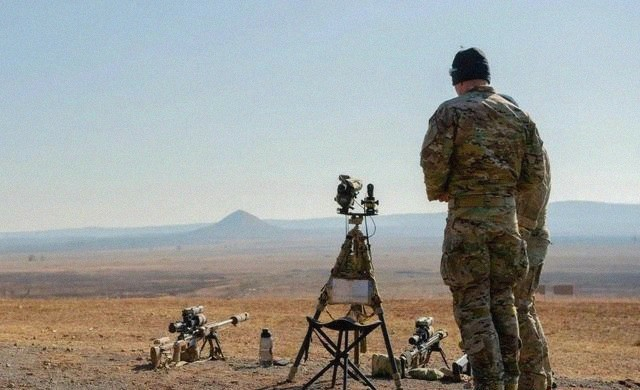
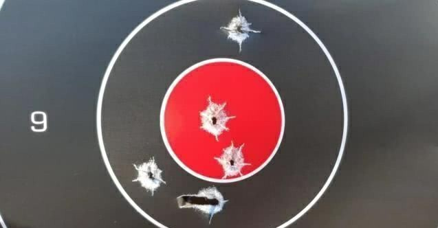
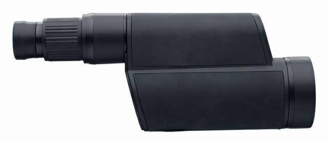
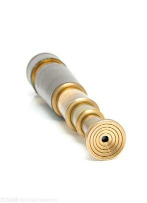
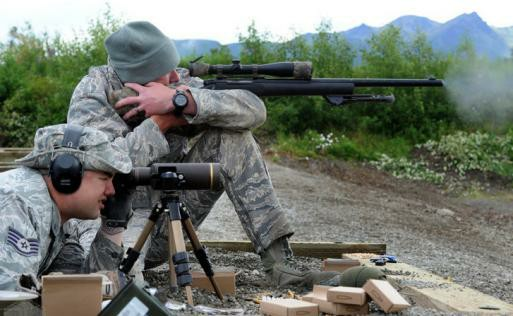
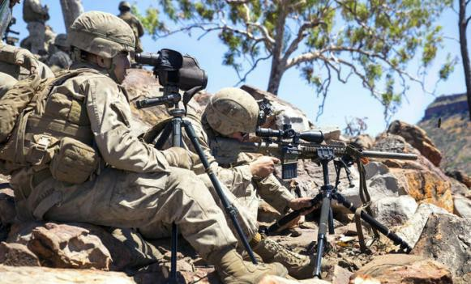
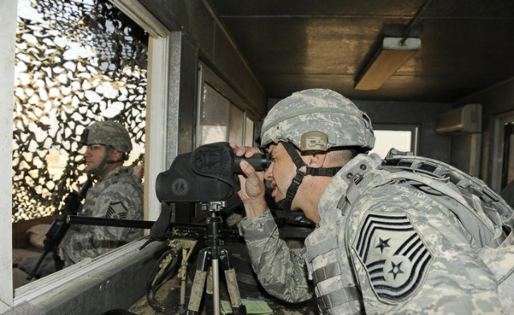

说到特种兵的观瞄装备，很多人第一反应就是狙击手使用的瞄准镜最厉害。毕竟几千米距离能够狙杀目标的前提，必须是狙击手使用狙击镜能够清楚的观察到目标。可是，如果这样想就错了，因为对于特种兵来说，有一种观瞄装备需要比狙击镜更厉害，那就是观靶镜。

观靶镜是配合狙击手的观察手用来辨认目标、判断距离、观察弹着点的观瞄装备。试想一下，如果在任务距离上，狙击镜能够看清楚目标的头部，那么观靶镜就要能看清楚子弹的弹孔。是目标的头部大还是弹孔大，自然不言而喻，所以观靶镜优良的性能也就体现出来了。

作为世界头号军事强国，目前美军海军陆战队狙击单位配的观靶镜是知名光学仪器制造商刘坡尔德Luepold生产的Mark 4 12-40×60mm观靶镜，美军内的制式型号为M151。
M151观靶镜是一款单筒望远镜。这款观靶镜之所以选择单筒样式，而不是使用双筒样式，那是因为单筒样式比双筒样式更加适合观靶镜所担负的功能。双筒镜虽然有观察物体立体感强、视野开阔等优点，但是在能达到的精密程度上不及单筒镜，自身重量也更重。所以观靶镜的设计样式，还是精密程度高、携带方便的单筒镜更加适合。

▲M151观靶镜
M151观靶镜放大倍率可达12到40倍，物镜直径为60mm。相较于其他观瞄装备来说，它有两大技术优势。第一就是镜体内部采用了“Z”字形的棱镜折射结构。根据望远镜的原理，当物镜、目镜一定时，望远镜能观察的距离就与目、物镜之间的距离有关。目、物镜距离越远，望远镜能观察的距离就越远。所以我们看到的天文望远镜往往很长很大，而老式的单筒望远镜也是可以伸缩的。M151用“Z”字形的棱镜折射结构就实现了缩短观靶镜长度依然能保持较好远望距离的优势。第二就是镜头内部更加实用的辅助观瞄分划。它不仅采用网格式的分划，让观察手可以通过密位很快的确定目标距离，而且这些分划的视觉效果可以避免观察手在观察目标时受干扰。

▲海盗的单筒望远镜可伸缩
由于M151观靶镜的放大倍率高，且在作战时要求精度也高，所以观察手在使用它时，配备了专用三脚架，以便于将M151观靶镜稳固。Luepol生产的专用架腿是三段式可伸缩的，设计非常人性化。当这种架腿完全收缩时，它的目镜高度刚好适合观察手卧姿使用；当这种架腿完全拉开时，它的目镜高度则刚好适合观察手坐姿使用。

▲M151全收缩时，观察手卧姿使用

▲M151完全拉开时，观察手坐姿使用
除此之外，M151观靶镜的配件也很贴心。它配备的黑色、绿色或迷彩色的罩衣，可以防晒、防沙尘、防磕碰；它的物镜上还有蜂窝结构的防反光罩，可以降低物镜反光而暴露自身的概率；它的皮卡汀尼导轨镜桥及转接环则可以连接夜视仪、激光指示器等装备，满足夜间作战行动需求。所以，除了观靶使用外，美军在完成一些定点的观察任务时也喜欢用它。

▲M151被用于定点观察
翁宗波：军事装备科普专家，主要从事国内外高科技装备、各兵种主战装备、联合作战战略战术等方面的研究，先后在《解放军报》《中国国防报》《兵器》杂志等军事类报刊杂志发表文章200余篇，个人荣立三等功1次。
出品：科普中国军事科技前沿
作者：翁宗波
策划：金赫
监制：光明网科普事业部
来源：科普中国-军事科技前沿